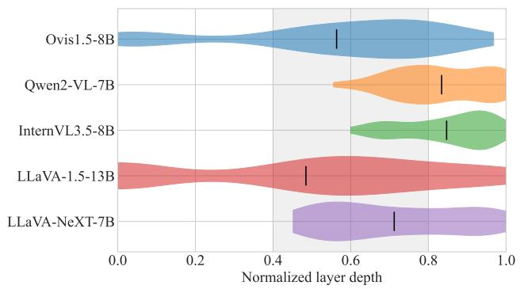

Figureure 26 · Top-K saturation across the five other-architecture familiesFigure 26. Top-K saturation across the five other-architecture families. Gaze-redirection accuracy (forced 1-of-6 LLM judge, chance 16.7%) versus the number of redirected heads K, on the 500-strip validation set (n=3,000 per point); shaded bands are bootstrap 95% CIs. Per-model peaks are reported in Tab. 2. Every family shows the same hump-then-collapse shape but peaks in a different place: Ovis1.5-8B peaks at K=100 (68.7%) and collapses hardest as the −δ over-suppression drives outputs to junk, Qwen2-VL-7B and InternVL3.5-8B peak in the mid-60%s (at K=90 and K=140) and degrade gently, and the two frozenencoder LLaVA families plateau near 35–39% without a sharp peak.这张图概括 Gaze Heads 的整体方法流程。阅读时先看模块之间传递的训练信号，再看作者如何把目标拆成可优化的子问题。

Figureure 25 · Layer concentration of the top-100 gaze heads across the five other-arFigure 25. Layer concentration of the top-100 gaze heads across the five other-architecture families. Layer indices are normalized to a depth fraction so models with different layer counts (28, 32, 36, 40) share one axis; the shaded band marks the mid-to-late region (depth 0.4–0.8) and the tick is each model’s mean depth. The top-100 gaze heads sit in the second half of every network: Qwen2-VL (28 layers) and InternVL3.5 (36) concentrate latest (mean depth ≈ 0.84), Ovis (32) and LLaVA-NeXT (32) fall in the mid-to-late band, and LLaVA-1.5 (40) is the most distributed, with a tail into the early layers. Across architectures the gazehead construct keeps a consistent geometric meaning: gaze heads are mid-to-late LM heads.这张图概括 Gaze Heads 的整体方法流程。阅读时先看模块之间传递的训练信号，再看作者如何把目标拆成可优化的子问题。